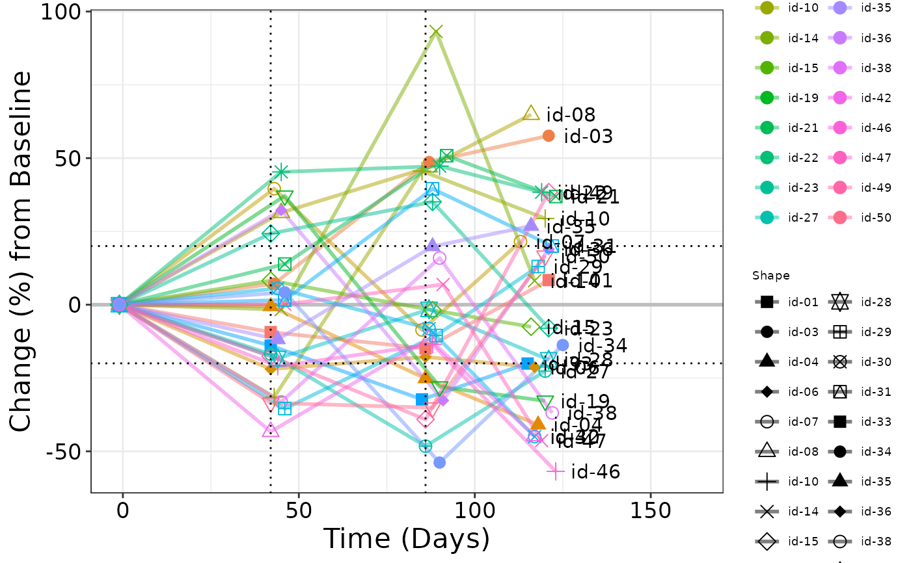

Spider plot is often used in Early Development (ED) and displays individual patient plot of an endpoint over time by group.
g_spiderplot(
marker_x,
marker_id,
marker_y,
line_colby = NULL,
line_color_opt = NULL,
marker_shape = NULL,
marker_shape_opt = NULL,
marker_size = 3,
datalabel_txt = NULL,
facet_rows = NULL,
facet_columns = NULL,
vref_line = NULL,
href_line = NULL,
x_label = "Time (Days)",
y_label = "Change (%) from Baseline",
show_legend = FALSE
)vector of x values (must be in sorted order)
vector to group the points together (default should be USUBJID)
vector of y values
vector defines by what variable plot is color coded,
default here is NULL
vector defines line color, default here is NULL
vector defines by what variable points are shape coded,
, default here is NULL
vector defines marker shape code, default here is NULL
size of markers in plot, default here is NULL
list defines text (at last time point) and
flag for an arrow annotation
(per defined variable) - elements must be labeled txt_ann/mrkr_all/mrkr_ann.
txt_ann - text annotation next to final data point (for text annotation)
mrkr_all - vector of ID's (for annotation marker)
mrkr_ann - vector of ID's (subset of mrkr_all) where arrow is desired to
indicate any study interim points. Default here is NULL
dataframe defines what variable is used to split the
plot into rows, default here is NULL
dataframe defines what variable is used to split the
plot into columns, default here is NULL
value defines vertical line overlay
(can be a vector), default here is NULL
value defines horizontal line overlay (can be a vector), default here is NULL
string of text for x axis label, default is time
string of text for y axis label, default is % change
boolean of whether marker legend is included,
default here is FALSE
ggplot object
there is no equivalent STREAM output
# simple example
library(dplyr)
ADTR <- rADTR %>% select(STUDYID, USUBJID, ADY, AVISIT, CHG, PCHG, PARAMCD)
ADSL <- rADSL %>% select(STUDYID, USUBJID, RACE, SEX, ARM)
ANL <- left_join(ADTR, ADSL, by = c("STUDYID", "USUBJID"))
ANL <- ANL %>%
dplyr::filter(PARAMCD == "SLDINV" & AVISIT != "POST-BASELINE MINIMUM") %>%
dplyr::filter(RACE %in% c("WHITE", "ASIAN")) %>%
group_by(USUBJID) %>%
dplyr::arrange(ADY) %>%
dplyr::mutate(
CHG = ifelse(AVISIT == "Screening", 0, CHG),
PCHG = ifelse(AVISIT == "Screening", 0, PCHG)
)
ANL$USUBJID <- substr(ANL$USUBJID, 14, 18)
# Plot 1 - default color and shape mapping
g_spiderplot(
marker_x = ANL$ADY,
marker_id = ANL$USUBJID,
marker_y = ANL$PCHG,
line_colby = ANL$USUBJID,
marker_shape = ANL$USUBJID,
# marker_size = 5,
datalabel_txt = list(txt_ann = ANL$USUBJID),
# facet_rows = data.frame(sex = ANL$SEX),
# facet_columns = data.frame(arm = ANL$ARM),
vref_line = c(42, 86),
href_line = c(-20, 20),
x_label = "Time (Days)",
y_label = "Change (%) from Baseline",
show_legend = TRUE
)

# Plot 2 - with line color mapping
g_spiderplot(
marker_x = ANL$AVISIT,
marker_id = ANL$USUBJID,
marker_y = ANL$CHG,
line_colby = ANL$RACE,
line_color_opt = c("WHITE" = "red", "ASIAN" = "blue"),
marker_shape = ANL$USUBJID,
x_label = "Visit",
y_label = "Change from Baseline",
show_legend = TRUE
)